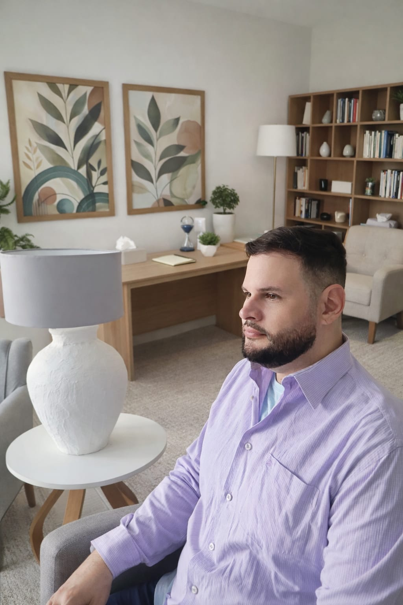
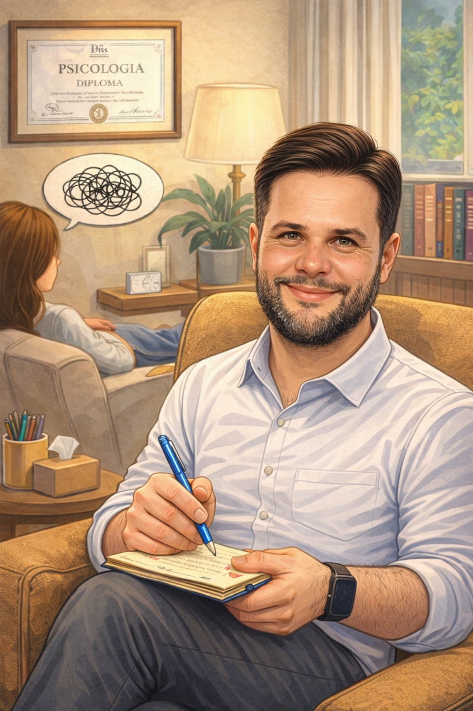

Um espaço seguro, acolhedor e sem julgamentos, onde você pode ser quem é e encontrar recursos para se autoconhecer, autoafirmar e atravessar os desafios emocionais, o luto e as transições da vida com suporte especializado.
Graduei-me em Psicologia pela Universidade Federal da Bahia (UFBA) e tenho especializações em Cuidados Paliativos e em Psicologia Hospitalar, além de formações em Terapia de Aceitação e Compromisso (ACT), Saúde Mental, Dependência Química, Transtornos Alimentares e Psicologia Antirracista e Afirmativa.
Minha trajetória foi construída no cuidado real com pessoas em momentos de grande vulnerabilidade. Tive uma proveitosa imersão de aprendizados na Ala Infantil e na UTI Infantil do Hospital das Clínicas da UFBA, e experiências igualmente enriquecedoras no CETAD/UFBA — referência nacional no tratamento de dependência química com foco em Redução de Danos. Essas profundas formações práticas me deram algo que nenhum livro ensina: a capacidade de estar presente de verdade, nos momentos mais difíceis da vida de alguém.
Atuo na Psicologia Clínica há mais de 7 anos, incluindo experiências com Terapia Breve, e desde 2022 ofereço atendimento voluntário no CECOM (Centro Comunitário Clériston Andrade) em Salvador — porque acredito que cuidar de pessoas não pode depender apenas da capacidade de pagar. A Psicologia precisa chegar a todas as pessoas e classes sociais que eu puder humanamente alcançar.

Minha linha de abordagem é a Terapia de Aceitação e Compromisso (ACT) com Narrativas Funcionais — uma das abordagens mais modernas, versáteis e cientificamente fundamentadas da psicologia contemporânea.
A ACT não busca eliminar o que você sente, nem te convencer de que seus pensamentos estão errados. Ela apenas convida a fazer algo muito mais poderoso: aprender a observar seus pensamentos e emoções sem ser dominado por eles, criando espaço para agir de forma comprometida com o que realmente importa na sua vida. Por ser uma abordagem transdiagnóstica — eficaz para uma ampla variedade de condições, sem depender de um diagnóstico específico — a ACT se aplica a diferentes pessoas, contextos e momentos da vida.
As Narrativas Funcionais, integradas à ACT, utilizam a história de vida do paciente para promover flexibilidade psicológica. Diferente de uma análise linear do passado, essa abordagem recontextualiza a experiência vivida para modificar como o paciente se relaciona com ela no presente — não para alterar o que aconteceu, mas para transformar o que esse passado ainda faz hoje.
Formações e abordagem ACT.
Sobre o psicólogo →ACT com Narrativas Funcionais — flexibilidade psicológica e Lado A e Lado B.
Saiba mais →Perdas e Luto, Cuidados Paliativos, Compulsão, LGBTQIAPN+, PcD, Ansiedade, Depressão e outras psicopatologias.
Ver especialidades →Do primeiro contato até a sessão online — simples e sem burocracia.
Ver o processo →O que dizem as pessoas que já deram o primeiro passo.
Ler histórias →Veja como funciona, leia a política e escolha um horário.
Marcar agora →Muitas pessoas carregam dores que parecem impossíveis de superar. Você está no lugar certo.
O luto não segue fórmulas prontas nem possui um prazo determinado. Quando a perda acontece — seja de alguém querido, de um animal de estimação, de um amor, de um sonho ou até da estabilidade financeira ou bens materiais — tudo muda profundamente dentro de nós. O mundo ao redor continua girando freneticamente enquanto estamos mais lentos e as pessoas costumam ter pressa para que a gente supere logo — o que pode tornar a dor solitária, silenciosa e sem cor. Mas quero que saiba algo fundamental: o peso que você carrega é real, seus sentimentos são legítimos e o processo do luto exige tempo para ser integrado à sua história. Você não precisa atravessar sozinho ou sem direção esse deserto de silêncio. Ofereço um suporte especializado, com profunda empatia e sem pressa, para acolher a sua dor. Vamos trabalhar juntos para reorganizar a sua vida, respeitando cada passo no seu próprio ritmo para costurar, aos poucos, todos os retalhos que podem ter ficado pelo caminho.
Saiba mais →Um diagnóstico desafiador pode suscitar Cuidados Paliativos e, inesperadamente, a vida de toda uma família muda em um instante: os planos se transformam, as perguntas se multiplicam e o peso dos medos e angústias parece grande demais para se carregar sozinho. Uma atenção muito mais profunda e sensível se faz necessária — o foco precisa ir além do corpo e passar a ser a pessoa inteira: sua história, seus vínculos, seus valores e tudo aquilo que ainda importa. O papel do suporte psicológico especializado é oferecer um espaço seguro de acolhimento para fortalecer os laços emocionais e garantir que se viva com o máximo de sentido, independentemente das circunstâncias que virão, reconhecendo que experienciar o presente com qualidade de vida e bem-estar é muito mais prazeroso do que inquietar-se com o peso de um horizonte em aberto. Juntos nós atravessaremos esses momentos de vulnerabilidade com dignidade, escuta livre de julgamentos e com cuidado genuíno em cada etapa do caminho.
Saiba mais →A compulsão é um transtorno emocional marcado pela necessidade incontrolável de repetir comportamentos disfuncionais para aliviar ansiedade, estresse, tédio ou angústia. Esse alívio é passageiro e logo dá lugar à culpa, à vergonha e à perda de controle — alimentando o próprio ciclo que se quer romper. São os fatores internos — e não os externos — que em geral levam a essa busca sistemática. Não é falta de caráter; é um ciclo que o cérebro cria para sobreviver a dores que nunca foram acolhidas ou tratadas e que se perpetua mesmo quando já somos conscientes dos prejuízos físicos, sociais ou financeiros que ele nos traz. A ACT vai te ensinar a trilhar um caminho seguro para retomar as rédeas da sua vida, criando espaço para acolher os pensamentos difíceis sem agir por impulso. A Redução de Danos respeita o seu tempo, focando em tratar os fatores que te levam a esses comportamentos e não em retirar de imediato todos os comportamentos e substâncias que nos tiram o bem-estar.
Saiba mais →Existir como você é não deveria ser um ato de coragem — mas para muitas pessoas ainda é. Seja pela sua orientação sexual, identidade de gênero ou origem étnico-racial, carregar o peso da discriminação e da invisibilidade cobra um custo emocional real e profundo que se acumula silenciosamente ao longo de toda uma vida. O racismo, a homofobia, a transfobia, o machismo e todos os preconceitos não ficam do lado de fora quando a gente fecha a porta de casa — eles entram junto, se instalam na autoestima, na forma como a gente se vê, nos relacionamentos e no receio constante de ocupar espaço em um mundo que ainda insiste em diminuir quem não se encaixa nos seus padrões. Aqui você encontra um espaço genuinamente seguro, afirmativo, antirracista e feminista, onde sua identidade é respeitada, sua história é acolhida e sua presença é bem-vinda exatamente como você é — sem julgamentos, num espaço capacitado e que conhece essas vivências de perto para te entender de verdade.
Saiba mais →Viver com uma deficiência, com TDAH ou passar pelo processo bariátrico é muito mais do que enfrentar limitações físicas — é carregar em silêncio, um peso emocional que o mundo raramente reconhece ou acolhe. A solidão de se sentir incompreendido, a exaustão de ter que se explicar constantemente e a dor de ser tratado como menos capaz deixam marcas que vão muito além do corpo. O capacitismo, o diagnóstico tardio, os anos de bullying, a relação dolorosa com o próprio corpo — tudo isso deixa marcas profundas na autoestima, na saúde mental e na forma como a pessoa se relaciona consigo mesma e com o mundo ao redor. Aqui você encontra um espaço especializado e sem julgamentos, onde sua história é compreendida de verdade — não apenas pelos livros, mas por um psicólogo que viveu e vive na pele o que é ser diferente num mundo que ainda não sabe acolher a diversidade, e que escolheu transformar essa experiência em cuidado genuíno para quem também vive isso.
Saiba mais →Ansiedade, depressão, estresse ou outras dores psicológicas não são "frescura", fraqueza ou falta de força de vontade — são condições reais que afetam milhões de pessoas que precisam ser tratadas com cuidado especializado. O sofrimento emocional não precisa atingir um nível extremo para ser levado a sério — e você não precisa estar no limite para buscar ajuda. Quando os pensamentos não param, o corpo não descansa, o cansaço não passa mesmo depois de dormir e a vida parece pesada demais para ser vivida no seu ritmo, isso é um sinal de que algo necessita de atenção. Esses sinais não são fraqueza — são o seu organismo pedindo cuidado. Você não precisa saber exatamente o que está sentindo para buscar ajuda — basta perceber que algo não está bem. Aqui você encontra um espaço baseado em evidências, seguro, acolhedor, sem julgamentos, para entender o que está acontecendo, nomear o que você sente e encontrar recursos reais para atravessar tudo isso com mais leveza e equilíbrio.
Saiba mais →Em poucos cliques você pode tirar suas dúvidas, ler a política, marcar sua sessão ou conhecer como funciona o atendimento online. Clique em uma das opções abaixo:

Converse comigo pelo WhatsApp antes de marcar.
Leia o acordo de respeito mútuo antes de marcar.
Escolha um horário e formalize sua sessão online.
Atendimento por videochamada, com total conforto e privacidade.
Depois de perder minha mãe ...
Fui muito bem acolhido ...
Minha mãe estava em cuidados paliativos ...
Se tiver outra dúvida, é só me chamar pelo WhatsApp. Responderei com prazer!
Tirar dúvidasVocê não precisa estar em crise para buscar ajuda.
Se algo não está bem, você merece cuidados agora.